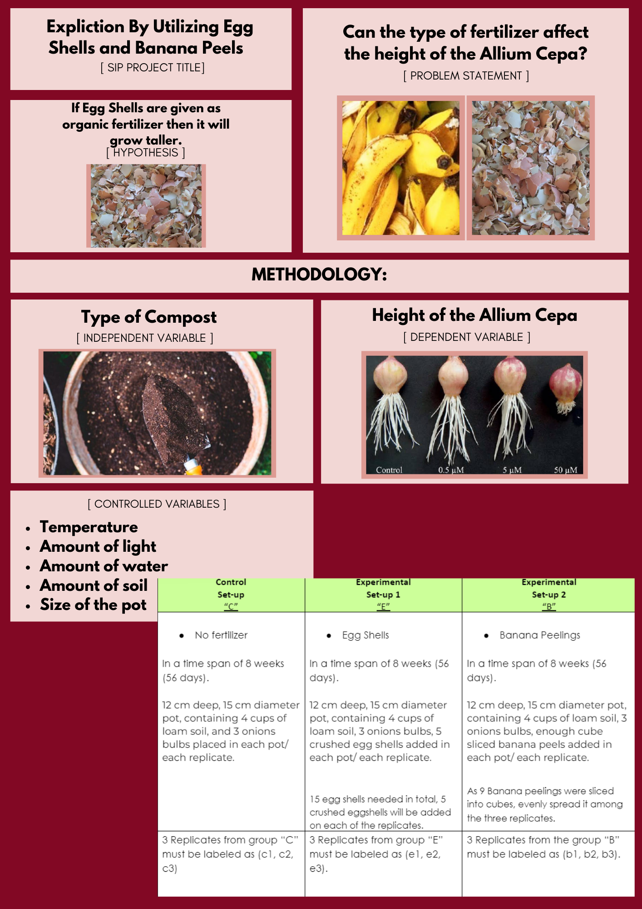

MAPEH
SIP
PROJECT BACKGROUND AND SIGNIFICANCE
HOME
MADRASAH INSTITUTION:
Bibliography
Benefits of organic compost
Composting
Banana peels are good for gardens
How to Use Eggshells in the Garden
Using Eggshells In Soil, Compost And As Pest Control
Docs Leading to the ET2
<
